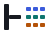
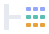

turnstile · identity sign
Proves equivalent. ⊢ is the entailment turnstile
— it reads “proves”. ≡ is the identity sign. Together
they state the judgement the project makes, in the notation it would be written in.
The turnstile is load-bearing, not decorative: a bare ≡ is the
hamburger-menu icon and would be read as one everywhere it appeared.
the identity sign is built from table cells
The identity sign is drawn as cells rather than solid rules, so it carries two readings at once: three horizontal bands at a glance, a grid of table cells up close. Nothing was added to the mark to achieve this — the same three bars do both jobs.
Two ratios keep the identity reading dominant. Row gaps are double the column gaps and run the full width uninterrupted, so the rows group before the columns do. And the cells are wider than they are tall — square cells would make a 3×3 grid, which is the app-launcher icon.
Worth knowing what you are not getting: no database cylinder. It is the most
templated shape available, it says “database” rather than “SQL”, and
it would break the typographic register that makes the rest of the mark work. The name also
already carries the signal — sqleq is sql + eq —
so the wordmark says it in letters and the mark says it in form, once each.
single colour · horizontal · READMEs, headers, docs, slides
the end-of-proof square · avatars, square frames
The Halmos tombstone — the box that ends a proof — enclosing the same cells.
pixel-snapped · use below 32px
Designed on a 16-unit grid rather than scaled down to one, so every edge lands on a device pixel. This exists because the square mark does not survive 16px honestly: its bars fall to 1.5px with a 0.9px gap, which antialiasing merges into a grey block. Here the bars are 2px with 2px gaps — and solid, because cells at this size would need to be 2px wide with 1px gaps, which reads as noise rather than as a table.
available · not the default


Hues are lifted from the project's generated reports; nothing here was invented for the logo.
| File | viewBox | Use |
|---|---|---|
| mark-{light,dark} | 49×34 | primary |
| square-{light,dark} | 54×54 | avatar, square frames |
| favicon-{light,dark} | 16×16 | below 32px |
| lockup-{light,dark} | 124×32 | mark + wordmark |
| mark-solid-{light,dark} | 49×34 | solid rules, no table reading |
| *-axes-{light,dark} | — | axis-coloured; see the warning above |
| build.py / sheet.py | — | regenerate every file on this page |
Every mark is plain <rect> on a half-unit grid
— no paths, strokes or transforms. They scale without hinting and recolour by editing
one hex value.